Games
Some games that I developed.
Diep Singleplayer
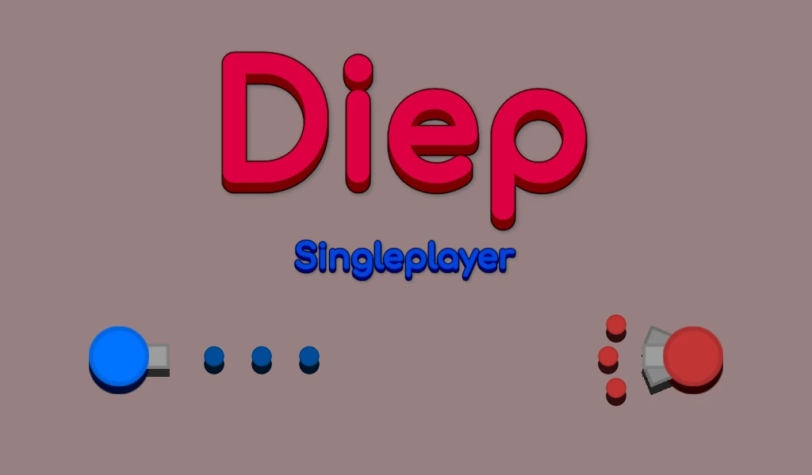
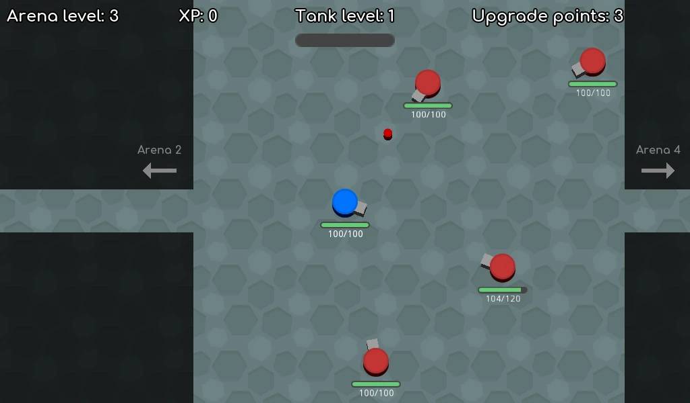

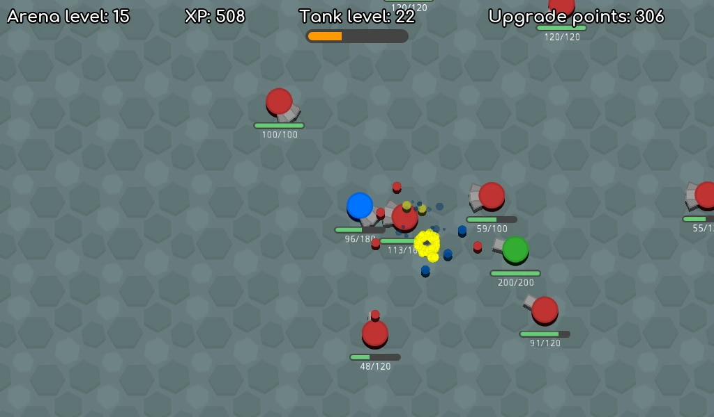


In this game you control a tank and have to destroy your opponents. Every time you destroy an opponent tank, you earn points that can be used to upgrade your tank.
You can play the game here: Diep Singleplayer
Arrows
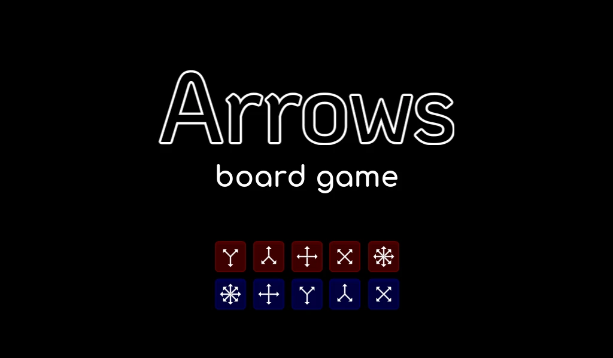
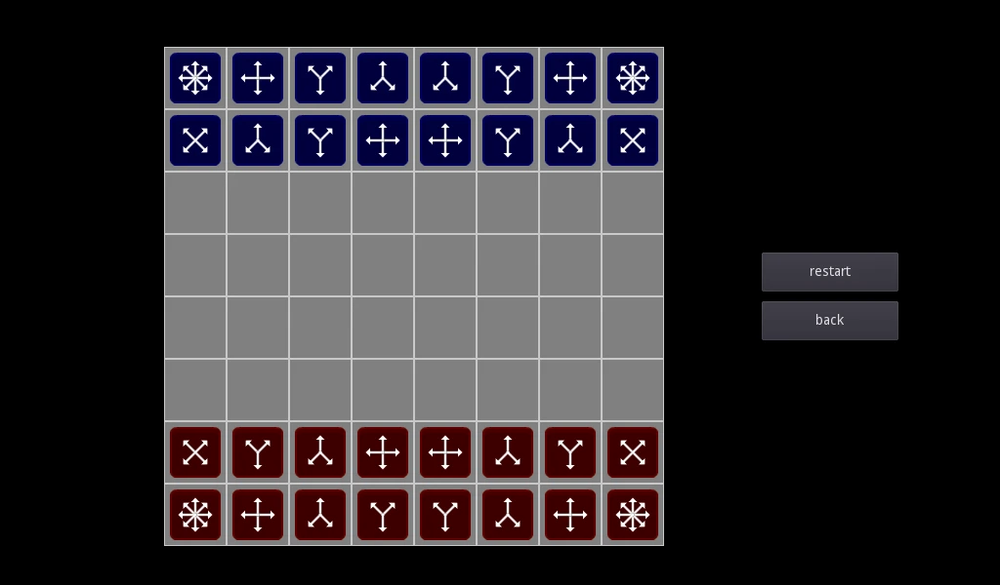
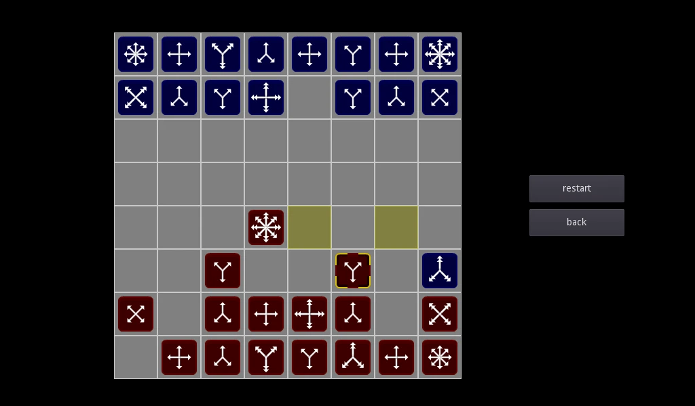

Arrows is a board game with simple rules. Each piece can move in the direction of the arrows in it. Capture opponent pieces by moving to the cell of the opponent.
You can play the game here: Arrows
Pendulum Game


In this game you control a pendulum with the mouse. You must collect stars to score points and avoid the spike balls.
There are 10 different levels.
You can play the game here: Pendulum Game
Infinite Maze

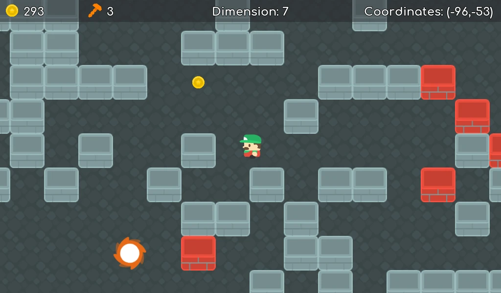
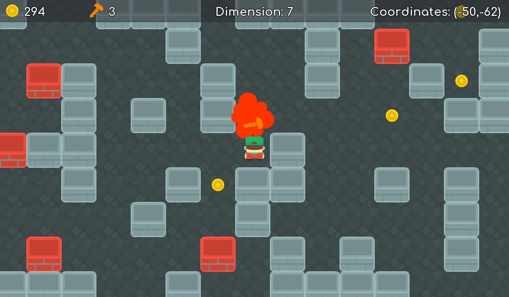
In this game you wake up in an infinite corridor, with infinite doors. Each door leads you to a different dimension, inside an infinite maze in every direction.
You can play the game here: Infinite Maze
Many Directions
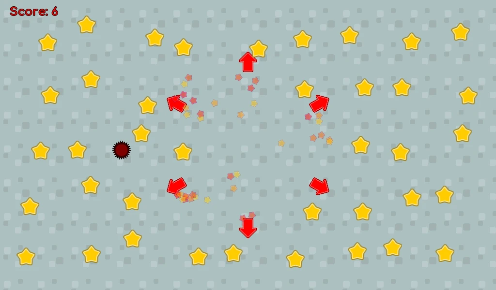

In this mind-bending game you control many arrows at the same time, each one pointing to a different direction.
I created this game initially for a game jam on itch.io, but then I continued improving.
You can play the game here: Many Directions
Ball Bounce Saga
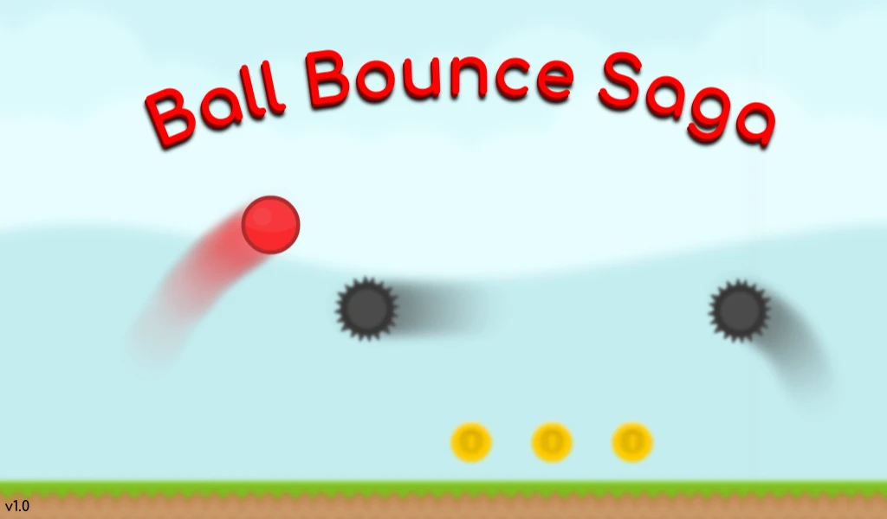
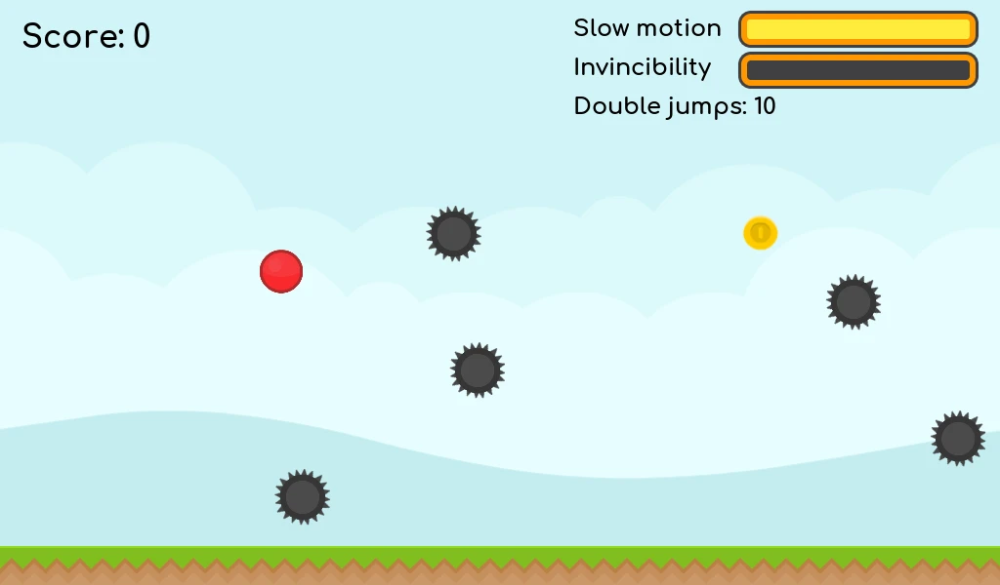
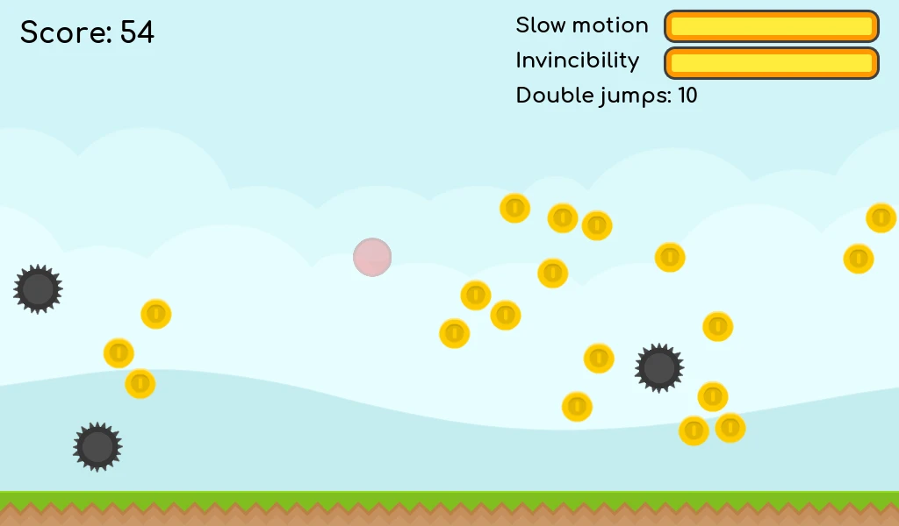
Bounce and avoid the spikes in 50 different levels.
Collect coins to buy power ups in the store.
You can play the game here: Ball Bounce Saga
Ball Bounce Mania

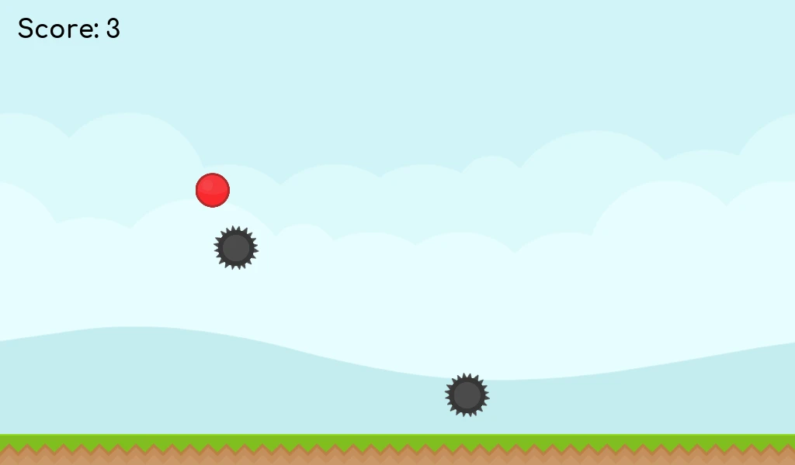

This is a simple and addictive game.
You have to bounce and avoid the spikes.
5 different levels.
You can play the game here: Ball Bounce Mania
Jump Ball
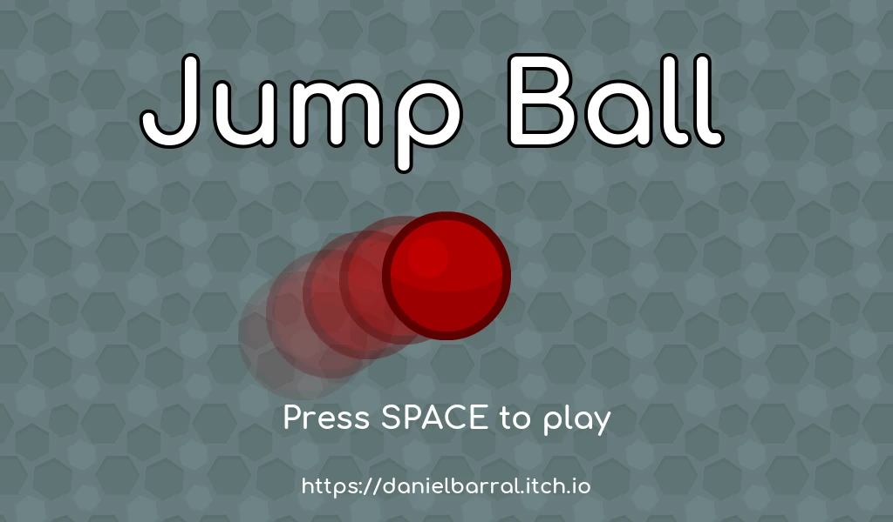

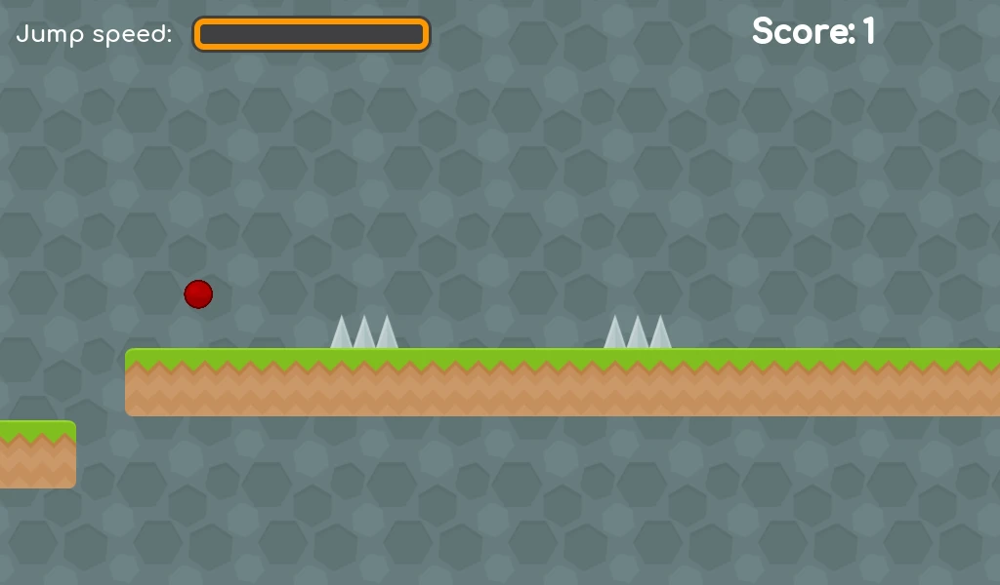
This was the first game that I created in Godot.
It's an endless running game with procedurally generated levels.
You can play the game here: Jump Ball
I also have a YouTube channel where I publish gameplay videos: